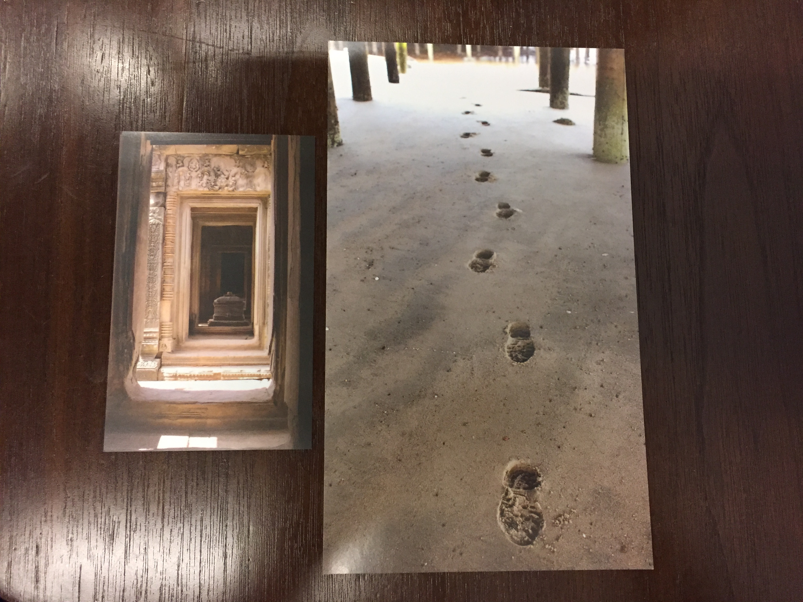
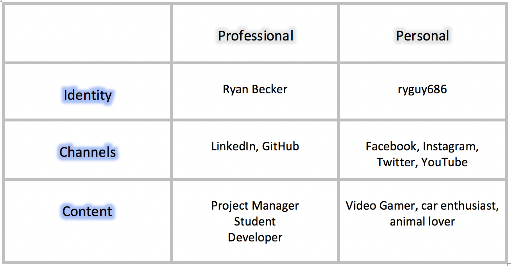
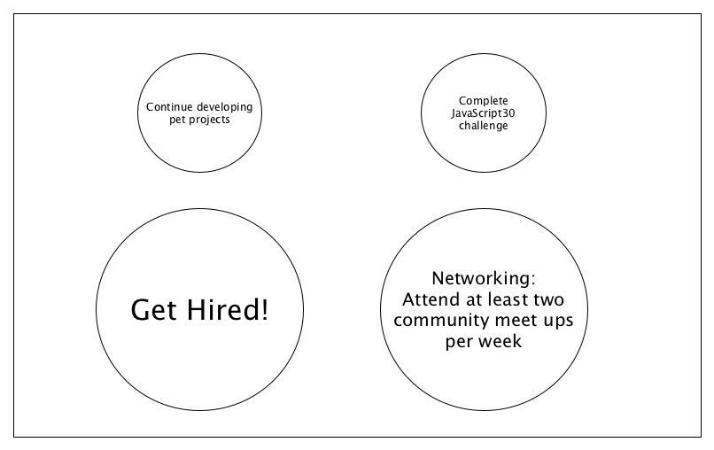

Homework Activities
My Learning Style
Visual
10% Auditory
50% Visual
40% Tactile
Quantitative Accomplishments
- During my tenure as a project manager I had the privilege of overseeing some large scale projects. My biggest job to date was responding to a strip mall that suffered a massive sewage back up.
Roughly 12,000 square feet was affected, including a 10,000 square foot Family Dollar retail store, a 1000 square foot hair salon and a 1000 square foot office space that was vacant. All three spaces required logistical and organizational decisions to get them addressed in a timely and safe manner.
Estimates were required for each space to be submitted to insurance. Our company billed just over $140,000 for 5 weeks of work.
- My career as a restoration specialist also saw periods of extreme demand such as the monsoon season of 2014. One of our major clients was the University of New Mexico. A single vendor cannot handle an account of this size, as a result my company shared the response of addressing flooding and dry out in 20 or so building spread across the campus.
Specifically I was tasked with 5 buildings, including one of significant historical value which required the most expertise and care. Its a building right one the corner of Central and University named Hodgin Hall. It was originally constructed in 1892 and then renovated in 2011. It’s consists of 3 floors and a basement.
All with gorgeous hard wood floors, lathe and plaster walls and ceilings as well as historically important pictures, paintings and antique furniture. A roof leak on the very top made its way down through all floors and settled on the hard wood in the basement. I brought in speciality drying and equipment and used infrared thermography.
I was also tasked with a an anthropology wing, a section of the Parish Hall Library and also a few sections of a performing arts center.
- Over my career I’ve obtained six industry certifications. I was able to obtain a Journeyman Water Restorer status.
Qualitative Features
- I have a good sense of organization. It has aided me immensely but has also slowed me down as time as I tend to be a perfectionist.
- I have spent many many years talking with customers, I have learned to be a good listener. It has aided me in terms of communicating expectations but sometimes I can get stuck down the weeds of trying to communicate everything all at once.
- I have a good sense of team-work. I love helping out and I tend to not ever sit idle. Sometimes it can be to my detriment as well because I’ve spent a good amount of time as the supervisor and sometimes I forget to listen to other’s ideas instead of just going with my first idea.
Elevator Pitch
Version 1
My name is Ryan Becker
I am a junior web developer
I've currently been playing around with Javascript and SQL
Version 2
Hi My name is Ryan Becker. I’m working on my coding skills and foundation at CNM's DeepDive that will help me develop games that others can enjoy. Are you working on developing games?
Version 3
Hi My name is Ryan Becker and I’m a junior web developer. I’m looking for employment with a tech company who creates vibrant concise websites. I am actively networking by attending community events weekly to make connections in the tech industry. Do you know of any reputable companies looking for junior devs?
Visuals Speak

My buddy Joy and I chose these two photos to represent how our path through this bootcamp is very strict and set in stone initially.
And our path opens to the edge of our imaginations once we make it out in the real world!
Golden Circle

What:
Get into a career that is both fulfilling and pays well.
How:
By developing coding skills and foundation.
Why:
Developing games that others can enjoy.
Balance
In my life I try to achieve balance by spending time with family and my two dogs. Every week I attend church and dinner with my sister's family.
I also spend a chunk of my weekend over at my parents helping in the yard and around the house. When a project gets hard or I get frustrated, I take some time
to play with my dogs. They love playing tug of war as well as general rough housing! Even a short break spent with them can make all the difference.
Identity Table

Team Building Exercise
Playing forbidden island with my group was a lot fun! Marlon was very patient and thoughtful when it came to moves and possible outcomes. I was happy with my
ability to explain the instructions to the group with Caleb's help. Caleb was awesome at making sure we adhered to the water rising mechanic and moving the levels up.
Chelsea did a good job of sifting through and arriving at the best option when all of us had different ideas of how to advance the game with someone's turn.
I'm happy to say we won! Both in game and as a group! I feel we all have a better understanding of each other and how to communicate possible ideas.
Stove Top Activity

Weekly Reflections
Week 1
This week started out overwhelming but as each day passed I found that I was more and more comfortable as well as confident.
The lecture portions can be confusing as Dylan moves pretty fast but by Friday I found myself better at taking notes.
George also reminded me that I have access to Dylan's past lecture notes so I will definitely be looking back on some of those to add more to my notes.
I am a little nervous about setting up the database/SQL portion of the data-design project but I will make it through! I am very much looking forward to next week!
Functions Homework
This week I really struggled with the functions assignment. I tried to spend a good amount of time watching tutorials on YouTube but I am still struggling with them as far the homework assignment was concerned
I hope there are more assignments to offset how badly I did on this one. The snap challenges regarding functions have also been hard. I will be spending some significant time outside class trying to understand them better.
Week 2
This week started out pretty rough with functions but as the week is coming to a close I am feeling very good about databases. Writing class objects with accessors, mutators and constructors turned out to be a lot easier
than I thought it would be. Same thing with actually inserting data into my databases. The snap challenge on Friday was the most confident I have felt about one! It felt great to help a few of my classmates as well. I am feeling
great about both projects, the PWP and data design. Bring on week 3!
Week 3
This week has been a lot fun with regards to Captsone! The submission process was very straight forward and I was impressed with the variety of the ideas submitted.
Voting was also very easy and I feel lucky enough to put on the most fun idea, Nerd Nook! I'am also very happy with my teammates, they are all outgoing and always willing
to help. Our planning process was methodical, but I am already seeing that we work well together! I am stoked to see how the project unfolds!
I am a little sad to not see us take the data design project further.
It's been an interesting project and I've felt confident with it. I am eagerly awaiting feedback on it. The CSS lecture and challenge has been hard. Coming into the
class I thought the CSS would be the easiest thing to nail down but boy was I wrong! I also failed to follow instructions on the challenge, which didn't help but I do
feel it was a good exercise as I still manipulated the content quite a bit and ended up with a pretty decent result.
Week 4
It's great to finally be working on our capstone project! We've mad a lot of progress in a short amount of time. I am still feeling a little
overwhelmed with the knowledge base. But at least the introduction of new concepts have slowed down a little bit. I am really appreciating my fellow class mates
as they are always ready and willing to help or answer questions. This week I attended two after school meet ups and both were really interesting! Especially the first one about publishing
apps to the two major app stores.
I enjoy coding because it's creative and allows me to solve problems. I'm also learning to love the tech community as a whole, everyone I've met is friendly and approachable. I also love
coding because it allows me to interface with technology which has always been a major passion of mine. I bought a computer specifically for this class and as each week passes I love it more and more.
Week 5
It's hard to believe that we are half way! It seems as though time is speeding up! Capstone has been going well, most of the group has been able to clear all errors from
unit testing. We will hopefully be past unit testing by mid next week. I attended two after school activities this week. Dylan's talk on net neutrality was very interesting.
And on Wednesday I attended the soft opening of the UNM rain forrest collaboration center. We performed a quick design related activity with partners and I very much enjoyed it!
I met some great contacts and spent some time with a fellow capstone group member. I am initially feeling overwhelmed with JavaScript, but hopefully after a few weeks I'll be feeling better
just like PHP. My PWP is going well but I need to put some more time into it. I have had a few migraines this week, I think its been due to stress as we have been discussing post-bootcamp a lot more.
I am confident in my abilities but it's starting to feel like a short time until graduation! I hope I am ready!
This week I am enjoying coding because there are so many ways to accomplish different tasks. I learned this week that I constantly need to be studying and learning new languages as
popularity and demand can change so much year to year. It's a plus and minus! Those who keep moving moving will do great, opposed to becoming stagnant and avoiding change.
Week 6
This week has absolutely flown by! They seem to be speeding up! My group and I have made fantastic project on our capstone. We are moving fast through APIs! I have been really appreciating
all the in class time the bridge has been giving us for group work. Some of my group members live pretty far, so it's really key for us maximize the group time to discuss questions and top level ideas.
I appreciated the check in with Karen and Dan, it's amazing to have so much support. Personally I need to start networking more aggressively the last 4 weeks. I have business cards ready for next
week and I look forward to handing a few out. I have found a great friend with Marlon, he is generally interested in attending meet ups and it makes it way easier as I sometimes tend to be quiet
around new people. Things are great this week!
Stemming off of last week reflection, I really love how general "coding" is today. A few weeks back it seemed really daunting and overwhelming but as I get closer to the end,
I'm seeing an immense world of opportunities. I just need to pick something and dive in!
Week 7
This week has been productive! I had an excellent meeting with George in regards to the progress on my personal website. I am very pleased with the progress I've made
and the direction of my site. George was pleased as well and provided great feedback. Our capstone group is chugging along with our project. We burned our API test tickets!
Working with insomnia was some what confusing, but it is a cool tool to use when checking APIs. This week I had another bad migraine, I know stress and tension can be
major contributors but I feel as thought I lacked the adequate hydration on Tuesday and Wednesday. I'll be sure to drink more next week!
This week I love coding because yet another guest speaker told us to pick a specialization! It's super stressful thinking about needing to be a
jack of all trades or be knowledgeable in EVERYTHING! I will be good with knowing a little of everything and picking a specialty.
Week 8
This week has flown by! I cannot believe we have just two more weeks. This week I made excellent progress on my personal website. I had my layout and colors done last week but my
contact from was non-functional so I configured that this week and I'm happy to say everything works 100% and all I have left now is to write some content itself!
I am feeling great for next week's deadline of Thursday. This week included interview day on Friday. My technical interview was first at 8:30am. Right out the gate!
Dylan ended up being my technical interviewer so that made me even more nervous. I did not do great and Dylan agreed, he said he was expecting better. But I'm trying my best to chalk
it up to a positive experience with things to improve for next time. I guess I'm happy it wasn't with an actual employer. My HR interview followed two hours later and it went really
well. I'm very proud of my previous experience and discussing it comes pretty easy. I learned so much working for a small family business and I think it translated well. I am eager
to hear what Mia reports of my interview! It is truly shocking that we have two weeks left...It's pretty fitting that Friday's prodev lab included a presentation about imposter
syndrome. I am feeling like I probably need to take more classes and expand my knowledge base. I don't necessarily feel like an imposter but I do feel like I still don't understand some
of the advanced and theoretical topics. I will absolutely be applying to some dev shops but I am also okay with continuing my education whether it's at UNM or CNM.
This week I am absolutely loving my personal website. It's really exciting to see code turn into something beautiful and functional. I am discovering more and more that
even though CSS & Bootstrap is a pains sometimes, I enjoy design and and might be better off sticking with front end development.